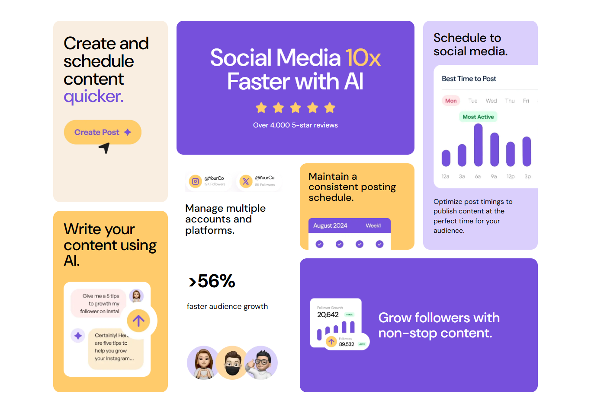

bento-grid-main

Bento Grid UI Design
A responsive Bento Grid layout built using HTML and CSS, featuring a modern card-based design, clean typography, and visually balanced sections. This project focuses on CSS Grid, layout positioning, spacing, and responsive web design.
HTML5
CSS3
CSS Grid
Media Queries
View live project